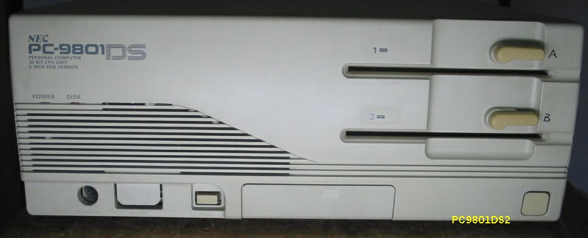

PC9801DS2

写真は、PC9801DS2です。この他にDS/U2があります。
電源盤PU463の修理
このDSは電源盤が故障しており、起動できませんでした。電源盤PU463はDSだけでなく、RX、DXなどとも
共通で、製造後10年以上経っていることから、壊れていることが少なくありません。何とか直したいと
思い、余っていたBXやXeなどの486機の電源盤から、基盤を取り出し、PU463のケースに押し込んでみました。
コネクタは8pinで赤の5Vの方から数えて、1,2,3pinが5V、黒の4,5,6pinがGROUND、灰色の7pinが+12V、
青の8pinが-12Vになります。生きている電源の方は、テスタで電圧を確認できますから、ドナーになる
方のコネクタを切断し、PU463のコネクタにつなぎかえます。場合によっては、ドナーのプリント基板を、
少し削らないと入らないことがあります。うまく収まれば完成です。古い電源盤を心配しながらつかうより
、思い切って少し新しい物に交換した方が、いいですね。
主な仕様
型 名 ：PC-9801DS2
価 格 ：358000
発表日 ：91/01
CPUクロック ： V30 8MHz相当 386SX16MHz
ROM ： BIOS及びN88-BASIC(86)96KB
標準RAM ： 640KB
最大ユーザーズメモリ ： 14.6MB
グラフィックVRAM容量 ： 256KB
グラフィックVRAM画素数： 640*400
グラフィックVRAM色数 ： 4096色中16色2画面
サウンドVRAM ： 16KB
テキストVRAM ： 12KB
拡張スロット数 ： 4
拡張スロット電源容量 + 5V ：0.8A
+12V ：0.06A
-12V ：0.07A
標準実装ドライブ FDD ：5インチ1M/640KFDD*2
内蔵インタフェースコネクタ：1MFDDI/F プリンタI/F RS-232CI/F
：マウスI/F デジタル、B/WI/F アナログCRTI/F
漢字 ：標準:第一、第二、拡張
サウンド機能 ：標準実装
カレンダ時計 ：μPD4900相当年サポートあり
ＶＣＣＩ適合 ：基準レベル0
使用条件 電圧 ：AC100V±10%
周波数：50/60
温度 ：10～35
湿度 ：20～80%(結露なし)
消費電力 標準 (W) ：50
最大 (W) ：120
エネルギー消費効率 (W) ：50
外形寸法 本 体 (mm) (W)：380 (D)：335 (H)：150
キーボード(mm) (W)：435 (D)：180 (H)：34
重量 本体 (Kg) ：9.4
(2003/04/11 追記)
PC9801のページに戻る